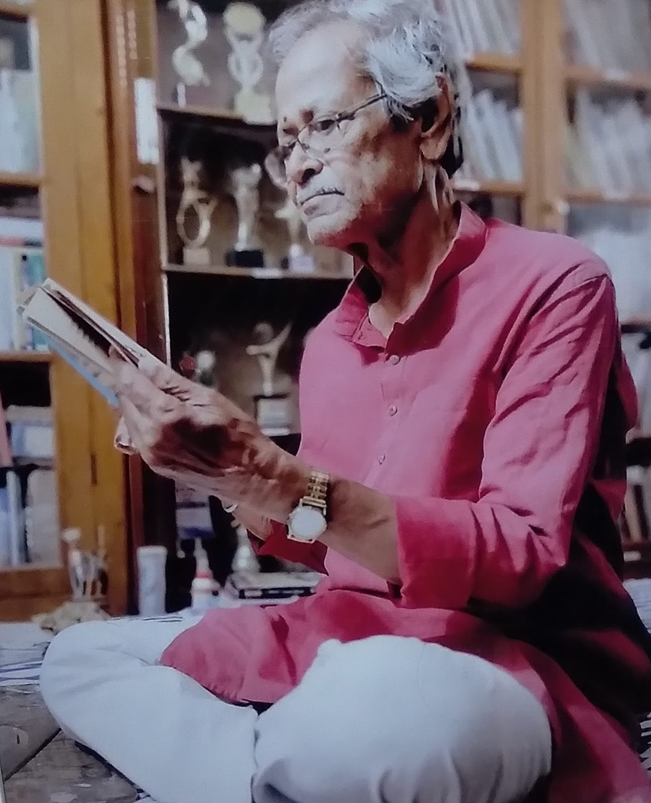
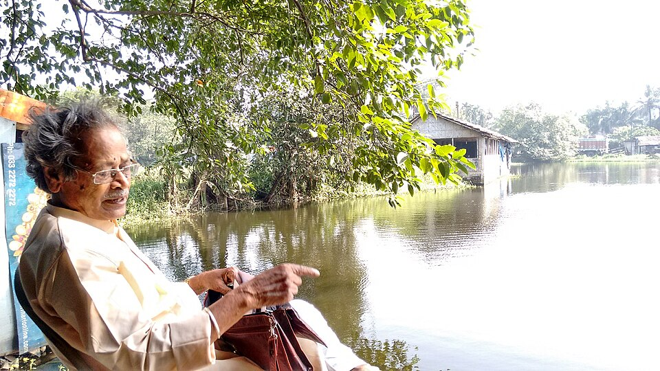

Artist Portfolio
Hariprasad Medda
View portfolio →
Read literature →

About the artist
Hariprasad Medda
Biography Snapshot
Quick Profile
Highlights
Selected Mentions

Interview
Conversation with Hariprasad Medda